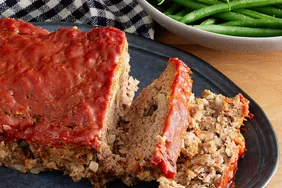

Meatloaf

This ia a dish called meatloaf
Meatloaf is a dish of ground meat that has been combined with other ingredients and formed into the shape of a loaf,
then baked or smoked
INGRIDENTS
- 2 lbs ground beef, 85% or 90% lean
-
- 1 med onion, finely chopped
- 2 large eggs
- 3 garlic cloves, minced
- 3 Tbsp ketchup
- 3 Tbsp fresh parsley, finely chopped
- 3/4 cup Panko breadcrumbs
- 1/3 cup milk
- 1 ½ tsp salt, or to taste
- 1 ½ tsp Italian seasoning
- ¼ tsp ground black pepper
- ½ tsp ground paprika
Steps in making a meatloaf recipe
- Preheat the oven to 350 degrees F (175 degrees C). Lightly grease a 9x5-inch loaf pan.
- Combine ground beef, onion, milk, bread crumbs and egg in a large bowl;
- season with salt and pepper. Transfer into prepared loaf pan.
- Mix ketchup, brown sugar, and mustard together in a small bowl until well combined;
- pour over meatloaf and spread it evenly over the top.
- Bake in the preheated oven until no longer pink in the center, about 1 hour.